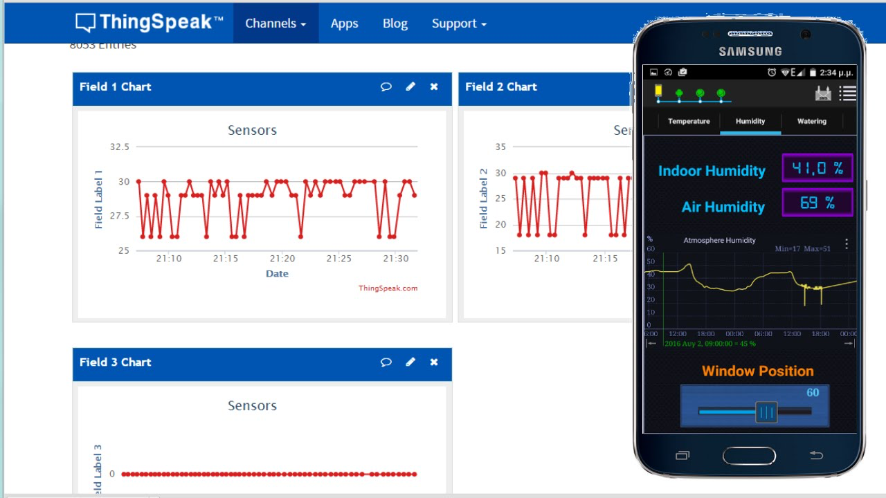

Portafolio de Actividades
Redes Digitales de Datos
Departamento de Ciencias e Ingenierías | Universidad Iberoamericana Puebla, México.

David Bojalil Abiti
Ing. Sistemas Computacionales
194228@iberopuebla.mx

Alfredo Barranco Ahued
Ing. Sistemas Computacionales
188723@iberopuebla.mx
Resumen:
Este portafolio de redes digitales presenta una recopilación de proyectos y trabajos desarrollados en el ámbito de las telecomunicaciones, redes informáticas y conectividad digital. Incluye experiencias en diseño, implementación y gestión de infraestructuras de red, abordando tanto tecnologías cableadas como inalámbricas.
Reportes de Prácticas:

ESP32
Thingspeak
Práctica 3: Wifi ESP32 - Thingspeak
Conocer, identificar y comprobar el funcionamiento de la plataforma Thingspeak con el módulo NodeMCU ESP8266 o ESP32.
David Bojalil Abiti
Alfredo Barranco Ahued
Febrero 17, 2025
Cables de red
RJ45
Práctica 5: Cables de Red
Conocer, identificar y comprobar el funcionamiento de los cables de red estructurado.
David Bojalil Abiti
Alfredo Barranco Ahued
Abril 7, 2025
Servidor Local
XAMPP
Práctica 6: Configuración de servidor para Red Local
Conocer, investigar e identificar los pasos para configurar una red local y el acceso a recursos de un equipo en red.
David Bojalil Abiti
Alfredo Barranco Ahued
Abril 21, 2025